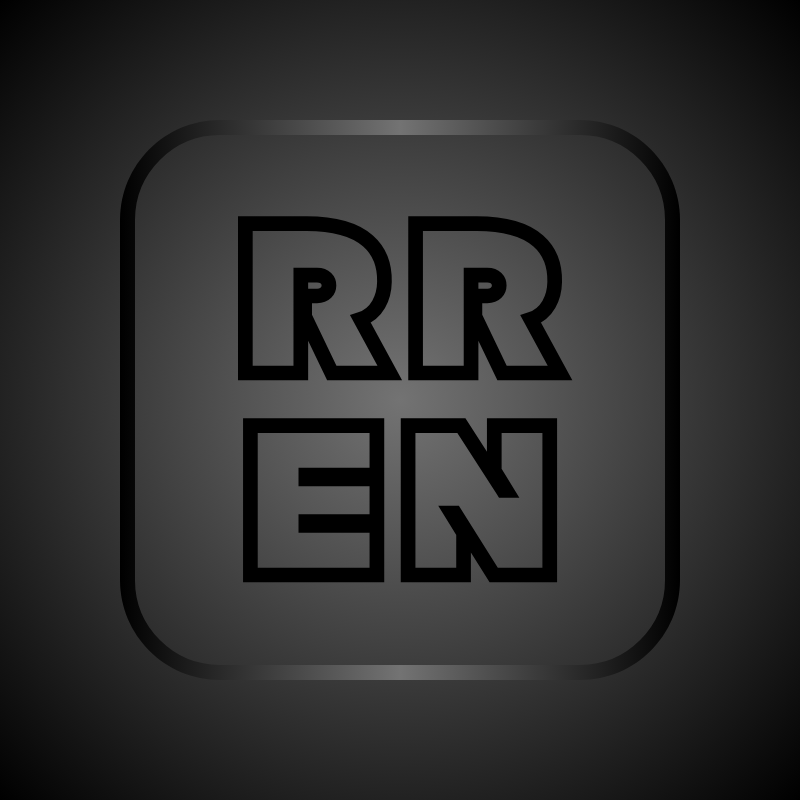

Anasayfa
Videolar
Tepki Videoları
Arşiv
Video Gönder
Quiz
← Önceki
Sonraki →
RReN Karma #53'ün İçeriği
Twitler yüklenmediyse yandaki bağlantılardan twitlere ulaşabilirsiniz
Twitlere ulaşmak için tıklayınız